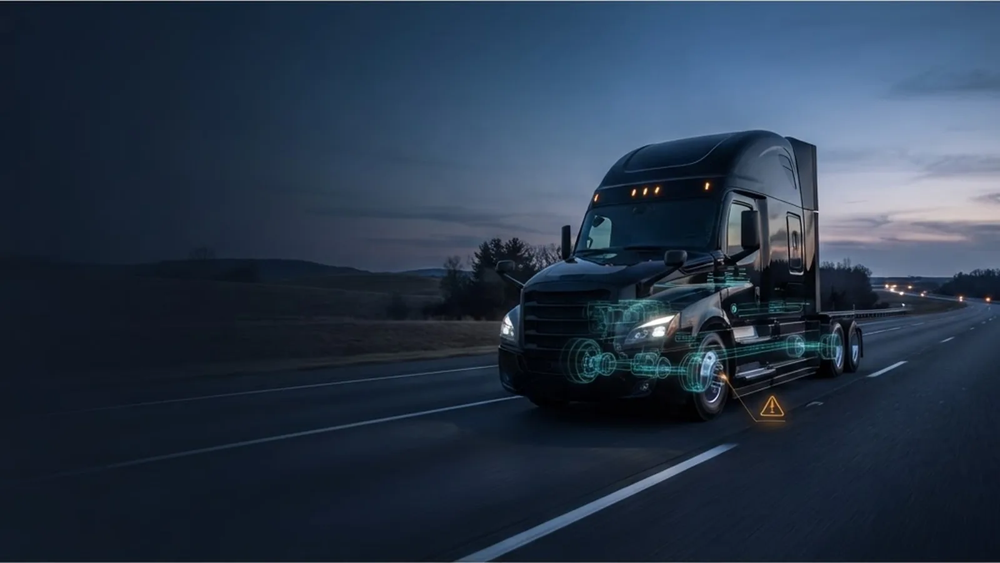

The failure is already happening. You just can't see it yet.
Fleet AI reads every unit against its own operating baseline while it's still on the road — and flags the drift weeks before it turns into a road call.
Every vehicle gets its own normal.
A Class 8 Cascadia running long-haul does not behave like a Transit cargo van on city routes. Fleet AI builds an individual baseline for each unit from how it actually operates — not industry averages.
When a unit drifts outside its own range — coolant behavior, voltage, RPM, oil pressure, fuel — it surfaces with the exact readings that triggered it.
Your shop gets a list, not a wall of data.
Fleet AI doesn't send every alert — it ranks units by urgency, available service window, and likely impact. Your team sees what to pull first and why, with the evidence behind each call.
Dispatchers, drivers, and the shop work from the same queue. A unit flagged today becomes a scheduled work order before it becomes a road call.
| Unit | Risk | Window | Action |
|---|---|---|---|
| TRUCK 2701Cooling system | High | 36 hrs | Schedule inspection |
| VAN 044Charging / electrical | Medium | 2 days | Battery load test |
| UNIT 118Fuel system | Watch | Monitor | Review route pattern |
Every flag shows its work.
A score on its own doesn't get a truck into a bay. Each flagged unit arrives with the subsystem, the readings that moved, how far they moved, and what to do about it.
That's the difference between an alert your team learns to ignore and a work order they can act on.
One platform for your entire operation.
Organized around how fleet operators actually work — not a feature wall. Every module connects back to keeping vehicles running and service teams informed.
Risk & reliability
- Early fault detection
- Vehicle health scoring
- Fault code analysis
- Risk queue and service planner
- Evidence summaries
Fleet operations
- Fleet registry
- Live map and geofences
- Dispatch board
- Driver messaging
- Route and asset context
Service management
- Work orders and service queue
- Maintenance history
- Parts room and reorder alerts
- Recall watch
- Preventive planner
Driver & safety
- Driver roster and scoring
- Coaching queue
- Camera review
- DVIRs
- HOS visibility
Compliance
- Inspection center
- DOT-ready workflows
- Audit packages
- Document readiness
- Hours-status visibility
Cost & integrations
- Fuel activity
- Spend analytics
- Executive reporting
- Alert routing
- Webhooks
What the numbers actually mean.
Every flagged vehicle includes the specific readings that triggered it, the affected subsystem, and a recommended action — not just a score.
Typical lead time before a developing fault reaches the point of failure, based on sensor drift patterns across duty cycles and vehicle types.
Tested across cargo van, light truck, medium duty, passenger, and Class 8 with a 0.12% false positive rate over 6.7 million validation records.
See what's hiding in your fleet.
Connect a few vehicles and we'll walk the risk queue together — what got flagged, what triggered it, and what it means for your next service window.